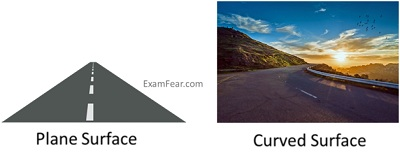
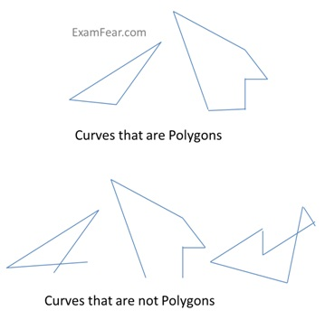
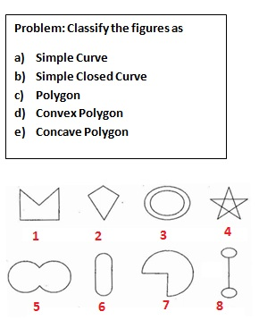
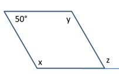
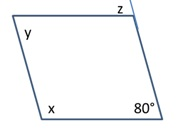

Understanding Quadrilaterals
Introduction to Shapes
Introduction to Shapes
A shape is the form of an object or its external boundary, outline, or external surface, as opposed to other properties such as color, texture, or material composition. In mathematics, there are various kinds of shapes. Below are a few examples.

Curves
Curves
A curve is a line or outline which gradually deviates from being straight for some or all of its length.
- A simple curve does not cross itself at any point.
- Aclosed curve is a curve with no endpoints and which completely encloses an area
|
Curve type |
Figure |
|
Simple curve that is not closed |
|
|
Not a simple curve |
|
|
Simple closed curve |
 |
|
A closed curve that is not simple |
 |
- The portion covered by a closed curve inside it is called the interior of a curve.
- The portion which is not covered by a closed curve inside it or the portion outside of a closed curve is called exterior of a curve.

Polygons
Polygons
A simple closed curve made only of line segments is called a Polygon.

Polygons are classified based on various factors as indicated below:
- Based on the number of their sides or vertices.
- Based on the portion of the diagonals in exteriors
- Convex Polygons - Those which have no portion of their diagonals in their exteriors.
- Concave Polygons - Those which have at least one portion of their diagonals in their exteriors.
- Based on size of and angle between the vertices
- Regular Polygons: A regular polygon is equiangular (angle between any two vertices is equal) and equilateral (length of each vertices is equal).
- Irregular Polygons: An irregular polygon may/may not be equiangular (like a rectangle) but not equilateral.

Diagonals
Diagonals
A diagonal is a line segment connecting two non-consecutive vertices of a polygon.
Problem: How many diagonals does each of the following have?
(a) A convex quadrilateral (b) A regular Hexagon (c) A Triangle
Angle sum property
Angle sum property
For a polygon, the sum of the interior angles is always fixed regardless of the shape of the polygon.The sum is always (n-2)*180°, where ‘n’ is the number of sides of the polygon. A few have been given below:
|
Name of the Polygon |
Number of Sides |
Sum of interior angles |
|
Triangle |
3 |
(3-2)*180° = 180° |
|
Quadrilateral |
4 |
(4-2)*180° = 360° |
|
n-gon |
n |
(n-2) *180° |
Problem: What is the sum of the measures of the angles of a convex quadrilateral? Will this property hold if the quadrilateral is not convex?
|
This is a convex quadrilateral. Diagonal AC divides it into 2 triangles. Using angle sum property, ∠A + ∠B + ∠C + ∠D = ∠1 + ∠2 + ∠3 + ∠4 + ∠5 + ∠6 = (∠1 + ∠2 + ∠3) + (∠4 + ∠5 + ∠6) = 180° + 180° = 360° |
|
This is a non-convex quadrilateral. Diagonal BD divides it into 2 triangles. Using angle sum property, ∠A + ∠B + ∠C + ∠D = ∠1 + ∠2 + ∠3 + ∠4 + ∠5 + ∠6 = (∠1 + ∠2 + ∠3) + (∠4 + ∠5 + ∠6) = 180° + 180° = 360° |
Problem: Find the angle measures x in the following figures:
Using angle sum property,
50° + 130° + 120° + x = 360°
300° + x = 360°
x = 60°
Using angle sum property,
90° + 60° + 70° + x = 360°
220° + x = 360°
x = 140°
First base interior angle = 180° - 70° = 110°
Second base interior angle = 180° - 60° = 120°
For 5 sides, angle sum of polygon = (n-2)*180° = 540°,
So, 30° + x + 110° + 120° + x = 540°
260° + 2x = 540°
x = 140°
Using angle sum property of polygon = (n-2)*180°
= (5-2)*180°
= 540°
So, x + x + x+ x+ x = 540°
5x= 540°
x = 108°
Exterior angles sum property
Exterior angles sum property
For a polygon, the sum of the exterior angles is always 360°regardless of the number of sides of the polygon.
- The sum of angles in a linear pair is always 180°.
- Exterior angle x° = Sum of opposite interior angles
Here the sum of the angles x + y will always be equal to 180°
Problem: Find x in the following figures:
Here 125° + m = 180° (Linear Pair)
Hence, m = 55°
Here 125° + n = 180° (Linear Pair)
Hence, m = 55°
Since, Exterior angle x° = Sum of opposite interior angles
x = 55° + 55° = 110°
Sum of angles of a pentagon = (n - 2)*180°
= 540°
From the linear pair property,
∠1 + 90° = 180°, ∠2 + 60° = 180°, ∠3 + 90° = 180°,
∠4 + 70° = 180°, ∠5 + x = 180°
Adding all the above,
x + (∠1 + ∠2 + ∠3 + ∠4 + ∠5) + 310° = 900°
x + 540° + 310° = 900°
x = 50°
Problem: Find the measure of each exterior angle of a regular polygon of: (a) 9 sides (b) 15 sides
Soulution: 9 sides
Sum of angles of a regular polygon
= (n - 2) * 180°
= (9 - 2) * 180 = 7 *180 = 1260°
Each interior angle
= Sum of interior angles/No. of sides
= 1260°/9 = 140°
Each exterior angle = 180° - 140° = 40°
Solution: 15 sides
Sum of angles of a regular polygon
= (n - 2) * 180°
= (15 - 2) * 180 = 13 *180 = 2340°
Each interior angle
= Sum of interior angles/No. of sides
= 2340°/15 = 156°
Each exterior angle = 180° - 156° = 24°
Kinds of Quadrilaterals
Kinds of Quadrilaterals
Quadrilaterals are classified based on the nature of their sides and angles.
- Trapezium - It has a pair of sides which are parallel.
- Kite - It is a diamond shaped quadrilateral with two distinct consecutive pairs of sides of equal length.

- Parallelogram - A parallelogram has two distinct consecutive pairs of parallel sides of equal length.
- The opposite sides of a parallelogram are equal.
- The opposite angles of a parallelogram are equal.
- The adjacent angles in a parallelogram are supplementary.
- Diagonals of a parallelogram bisect each other.


AB, CD and BC, AD are pairs of opposite sides.
∠A, ∠C and ∠B, ∠D are pairs of opposite angles.
AB-BC, BC-CD, CD-DA and DA-AB are adjacent sides.
∠A-∠B,∠B-∠C, ∠C-∠D and ∠D-∠A are adjacentangles.
Problem: Draw a rough figure of a quadrilateral that is not a parallelogram but has exactly two opposite angles of equal measures
ABCD is a quadrilateral in which angles
∠A =∠C = 110°
Therefore, it could be a kite.
Problem: The measures of two adjacent angles of a parallelogram are in the ratio 3:2. Find the measure of each of the angles of the parallelogram.
Solution:

Let two adjacent angles be 3x and 2x.
Since the adjacent angles in a parallelogram are supplementary,
3x + 2x = 180°
5x = 180°
x = 36°
Therefore, first angle = 3x = 3 * 36° = 108°
Second Angle = 2x = 2 * 36° = 72°
Problem: Two adjacent angles of a parallelogram have equal measure. Find the measure of the angles of the parallelogram.
Solution: Let each adjacent angle be x.
Since the adjacent angles in a parallelogram are supplementary,
x + x = 180°
x = 90°
Hence, each adjacent angle is 90°
Now, the other angles would be also 90°.
Types of Parallelograms
Types of Parallelograms
There are various types of parallelograms which are listed below:
- Rhombus - Rhombus is a kite-like shape having all sides of equal length and the opposite sides are parallel to each other.
- Rhombus has properties of parallelogram as well as kite.
- Diagonals of a rhombus bisect each other at right angles or 90 degrees.
|
ΔAOD ≈ΔCOD (SAS congruency criterion) m∠AOD = m∠COD ∠AOD and∠COD are linear pairs so, m∠AOD = m∠COD = 90° |
- Rectangle - A rectangle is a square with equal angles (90°).
- Opposite sides of a rectangle are of equal length and are parallel to each other.
- Diagonals of a rectangle are of equal length and bisect each other.
|
ΔABC ≈ΔABD (SAS congruency criterion) AB = AB and AD = BC m∠A = m∠B = 90° Hence AC = BD |
- Square - A square is a rectangle with equal sides.
- All sides of a square are equal and opposite sides are parallel.
- Diagonals are of equal length and bisect each other perpendicularly.
- All angles are 90°.
|
ΔAOD ≈ΔCOD (SSS congruency criterion) m∠AOD = m∠COD ∠AOD and∠COD are linear pairs so, m∠AOD = m∠COD = 90°
|
Problem: Find the measure of x, y, z
∠B + ∠C = 180° (Adjacent angles in a parallelogram are supplementary)
100° + x = 180°
x = 80°
z = x = 80° (opposite angles of a parallelogram are equal)
y = 100° (opposite angles of a parallelogram are equal)

x + 50° = 180° (Adjacent angles in a parallelogram are supplementary)
x = 130°
z = x = 130° (corresponding angles)

z = 80° (corresponding angles)
x + 80° = 180° (Adjacent angles in a parallelogram are supplementary)
x = 100°
y = 80° (opposite angles of a parallelogram are equal)
y = 112° (opposite angles of a parallelogram are equal)
y + x + 40° = 180° (Angle sum property)
x = 28°
z = 28° (Alternate angles)

x = 90° (vertically opposite angles)
y + x + 30° = 180° (Angle sum property)
y + 90° + 30° = 180°
y = 60°
z = 60° (Alternate angles)
Problem: ABC is a right-angled triangle and O is the mid-point of the side opposite to the right angle. Explain why O is equidistant from A, B and C.
Since, two right triangles make a rectangle where O is equidistant point from A, B, C and D because O is the mid-point of the two diagonals of a rectangle.
Since AC and BD are equal diagonals and intersect at mid-point.
So, O is the equidistant from A, B, C and D.